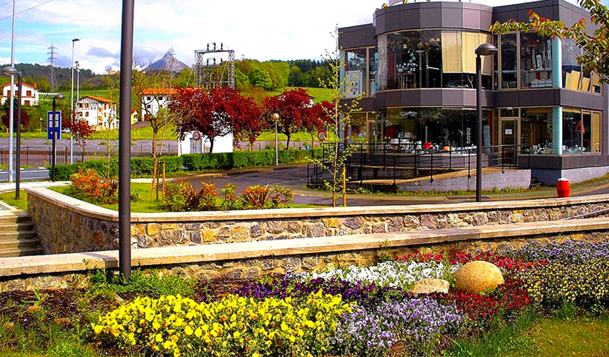
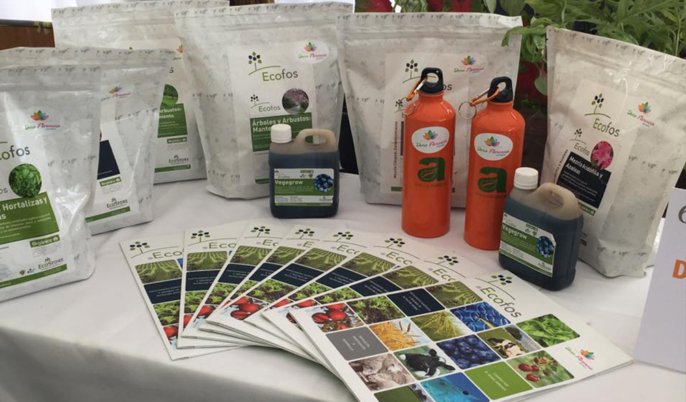
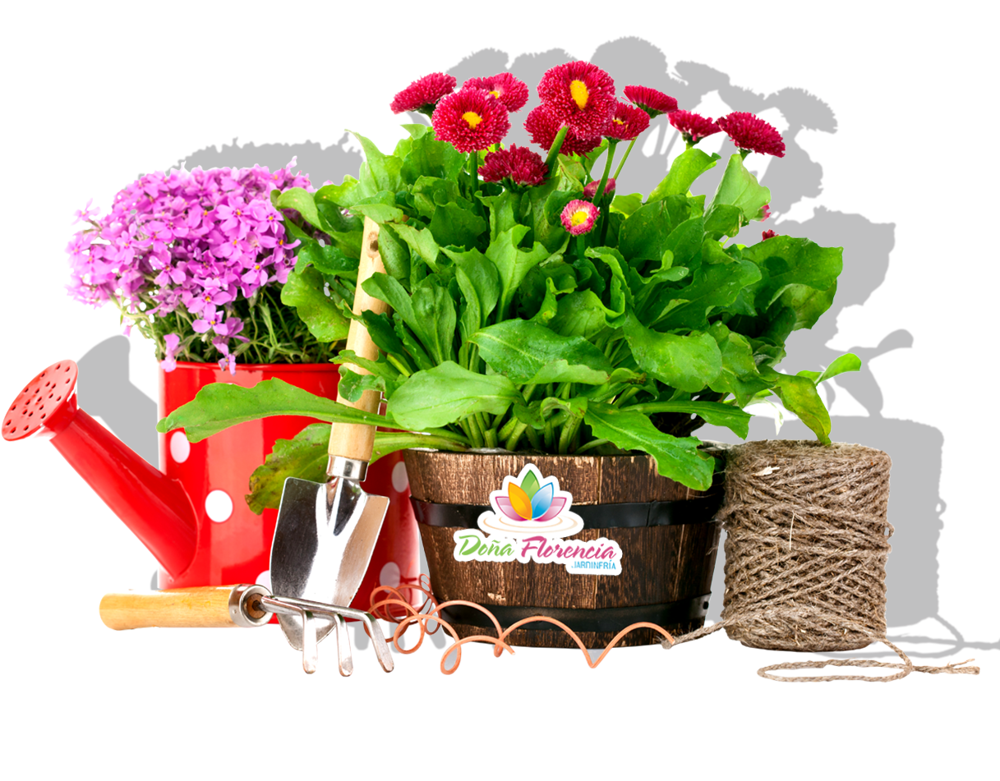
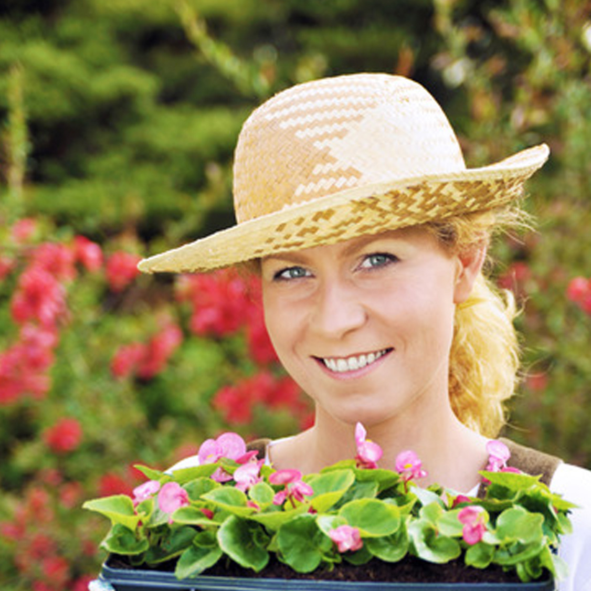

Asesoría para la creación de jardines a empresas e instituciones y particulares

Preparación de dosis fertilizantes para praderas y cultivos
Proyectos para instituciones tales como perfiles y otros, como la preparación de proyectos para instituciones de fomento, tales como Corfo, Sercotec, Indap, SAG, CONAF

Somos una empresa familiar, ubicado en la región de Aysén, en el corazón de la Patagonia, quienes con mucho esfuerzo y trabajo, han desarrollado esta empresa, con la ayuda de nuestros trabajadores quienes han ayudado a sostener un crecimiento continuo de ésta. Jardines Doña Florencia se ha mantenido activo a través de los años, de manera estable, en un proceso de innovación contínua, pensando en mejorar constantemente los productos y servicios a nuestros clientes.
Contamos con un vivero donde se realiza la propagación y crecimiento de nuestras plantas, para asegurar una entrega lo mas oportuna posible, teniendo en consideración las dificultades que esta región presenta.
Entregarte los mejores productos siempre será nuestro principal norte
Mi jardín quedó muy lindo. Gracias Doña Florencia por su gran trabajo.
— Amanda Corey
Me encantan los arreglos florales y los peluches. Tienen excelentes productos.
— Camila Robles
Me tienen como rey ante mi pareja. Gracias por los hermosos peluches que tienen
— Daniel Montillo
Envíanos tus consultas a través de nuestro formulario de contacto y te responderemos a la brevedad posible.